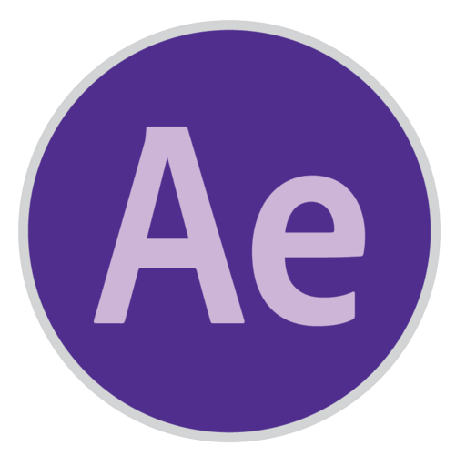

Video Editing

Adobe After effects
Motion Graphics and VFX
Visual Support for Video Editing
3D Tracking and VFX
VIDEO EDITOR - VIDEOGRAPHER - DIRECTOR
Hi there! I'm John Alfred M. Antalan, a passionate video editor, videographer and director.
With over two years of experience turning raw footage into compelling visual stories. I specialize in "dynamic cuts, color grading, and storytelling through visuals", bringing ideas to life with creativity and precision. I’m always excited to explore new projects, push creative boundaries, and continue growing as a video editor. Take a look at my work, and feel free to reach out—let's create something amazing together!
Video Editing
Motion Graphics and VFX
Visual Support for Video Editing
3D Tracking and VFX